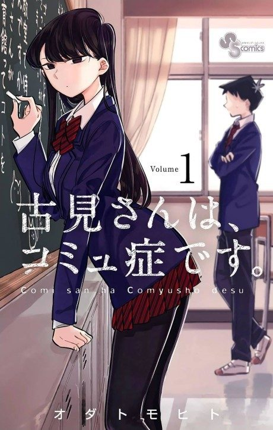

Komi Can't Communicate
Komi is the most admired girl in school but can't bring herself to talk to anyone. Tadano decides to help her make 100 friends.
After the anime, read the manga from Chapter 130.
Rate it or report where you stopped
Arcs
Episodes numbered continuously 1–24 across both seasons (Season 2 is 13–24).
Komi's First Friends
Average boy Hitohito Tadano discovers that the school's untouchable beauty Shoko Komi simply can't talk to people, and promises to help her make 100 friends.
Summer Break
Summer break brings Komi her first outings with friends.
Sports Day and Culture Festival
The fall events give Komi a chance to take part in school life for the first time.
Winter Holidays
Winter brings new classmates, Christmas and New Year's to Komi's growing circle.
Kyoto Field Trip
Komi worries about the class trip to Kyoto and who she will spend it with.
Valentine's and White Day
The end of first year approaches with Valentine's Day and White Day.